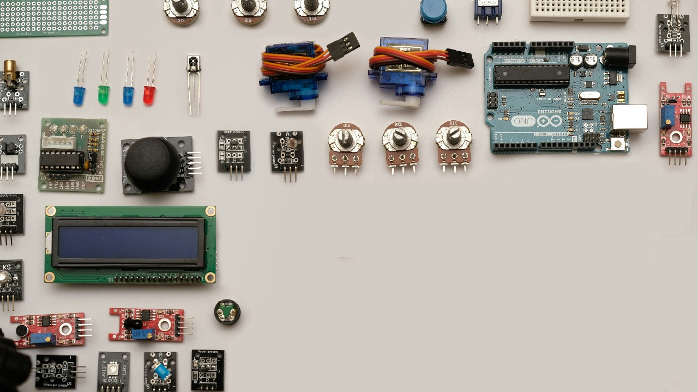

Sensors are the foundation of any interactive or automated system, enabling machines to sense, analyze, and respond to their environment. From robots to smart homes, sensors make intelligent control possible.
Fun Fact: The word “sensor” comes from the Latin word "sentire," meaning "to feel or perceive."
Why Are Sensors Important?
Sensors allow devices to gather data from the physical world, enabling them to make decisions based on real-time information. They are essential for applications like:
- Environmental monitoring (temperature, humidity)
- Motion detection (security systems)
- Distance measurement (robot navigation)
- Touch and pressure sensing (user interfaces)
Fun Fact: Motion sensors are used in your smartphone to auto-rotate the screen based on how you hold it.
What Exactly Are Sensors?
A sensor is a device that detects physical phenomena like temperature, motion, light, or gas levels and converts this information into signals readable by microcontrollers such as Arduino.
- Analog sensors: Output continuous voltage (e.g., temperature sensors).
- Digital sensors: Output binary signals (e.g., PIR motion sensors).
- Communication-based sensors: Use protocols like I2C or SPI (e.g., BMP280).
Types of Sensors
1. Environmental Sensors
- DHT11/DHT22 – Temperature and humidity
- BMP180/BMP280 – Pressure and altitude
- UV Sensors – Detect ultraviolet light
2. Motion and Position Sensors
- PIR Motion Sensor – Detects human motion
- Accelerometers (e.g., MPU6050) – Detect orientation and movement
- Gyroscopes – Measure rotational velocity
3. Distance and Proximity Sensors
- HC-SR04 – Ultrasonic distance measurement
- IR Sensors – Obstacle detection
- Sharp IR – Short-range distance sensing
4. Touch and Pressure Sensors
- Capacitive Touch – Detects finger proximity
- FSRs – Sense applied force or pressure
5. Sound and Vibration Sensors
- Microphone Modules – Detect sound levels
- Piezo Sensors – Detect vibrations
6. Gas and Chemical Sensors
- MQ Series – Detect gases like LPG, CO2
- pH Sensors – Measure acidity of liquids
7. Imaging and Vision Sensors
- TCS3200 – Detect color values
- Camera Modules – Capture images and video
How to Use Sensors with Arduino
- Wiring: Connect VCC, GND, and signal pins correctly.
- Reading Data: Use analogRead() or digitalRead() or communication protocols.
- Using Libraries: Many sensors come with libraries to simplify coding.
Fun Fact: The Arduino community has thousands of libraries that simplify sensor integration.
Choosing the Right Sensor
- Define what you want to measure
- Consider accuracy and power consumption
- Check for compatibility and Arduino libraries
Conclusion
Sensors give life to Arduino projects. Whether you're building a smart system, a robot, or a monitor, choosing and using the right sensors is key to success. With knowledge and creativity, you can build anything!